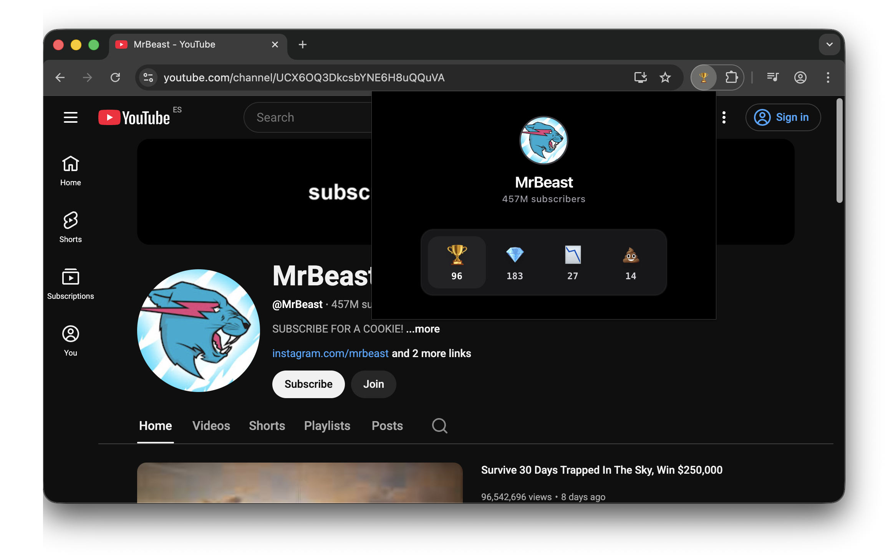

Crowd Signal
Signal, not comments.
Community insight for YouTube channels — decide faster what’s worth watching.
Aggregated viewer signals, shown directly on YouTube channel pages

Crowd Signal is a quiet tool for allocating attention. It lets viewers leave a single, anonymous signal per channel—no comments, no rankings, no drama. Just aggregated community sentiment to help you decide if a channel is worth your time.